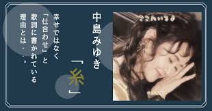

推薦作品 6首
地上之星（地上の星）
《地上之星》是中島美雪的創作並演唱的歌曲。2000年，中島美雪獲邀為NHK的電視節目《プロジェクトX ～挑戰者たち～》寫下這首歌《地上の星》。這首為默默支持日本經濟的無名英雄寫下的歌曲，獲得日本各個階層的共鳴。
地上之星-網址誕生（たんじょう）
《誕生》是中島美雪創作並演唱的歌曲，作為1992年10月7日發行的單曲《誕生/Maybe》的主打曲，後來收錄在原創專輯《EAST ASIA》裏。
歌詞精煉深沉，曲風跌宕豪邁，深深的感情隱含其中，藴含了作者對愛情、人生的深刻思考及感悟，曾收入日本中學教科書中。粵語歌曲《 無盡至愛》（黎明詩演唱）、《你是我最傾心》（陳松伶演唱）、李翊君 《Remember》皆翻唱於此。
誕生-網址線（糸）
《糸》是中島美雪創作並演唱的音樂作品，收錄在1992年10月7日發行的專輯《East Asia》中。
據說這首歌是美雪為朋友即天理教第四代真柱中山善司的婚禮而創作的曲目，後來被《聖者的行進》採用為ED。
線-網址

騎在銀龍的背上（銀の龍の背に乗って）
《銀の龍の背に乗って》（《騎在銀龍的背上》），中島美雪於2003年7月23日發行的第38張單曲。主打曲《銀の龍の背に乗って》是柴崎幸及吉岡秀隆主演的日劇《五島醫生診療所》第一、二部的主題曲，也是2022年12月16日上映的續集電影《五島醫生診療所》的主題曲。2022年12月14日，和歌曲《一同》一起，作為主打單曲再次發行。
騎在銀龍的背上-網址